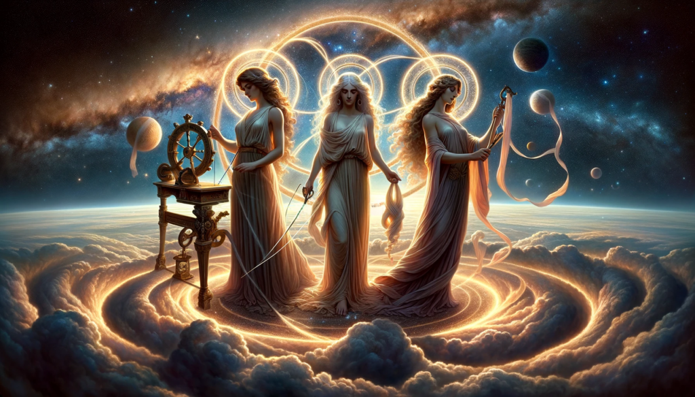

About
Table of Contents
The Mission
As AI adoption proliferates industry, ensuring the safety and trustworthiness of these systems is becoming one of the most important issues society is facing. Decima2 is the first AI platform to develop models which are optimised for trustworthiness.
The Name
In Roman mythology, the Parcae were the personifications of human destiny. Nona spun the thread of life on her spindle, Decima measured the thread and Morta cut it. Opportunity, luck, catastrophe and ultimately death in Roman life would be explained in reference to the Parcae.
From Decima explaining human fate, modern society grants agency to an individual decision maker. This is one person, usually an expert, who decides the fate of you life via key moments from loan grants, to how your medical treatment is administered. We understand and accept that preconceived biases of the decision maker can make or break outcomes for individuals and marginalised groups, but we had no other option.

Machine learning assisted decision making (MLADM) was welcomed as an opportunity to externalise the decision from an individual and offered the promise of removing, or monitoring the potential for bias to impact. Society begins to move from a decision maker to a decision machine.
Early AI models have been focussed on performance (speed and accuracy), as they needed to demonstrate commercial viability and therefore provide return on investment. However, deep understanding of the data; how it is collected, processed and understood and its affects on the fairness of the decisions the models make has not been a focus. This has caused some models to simply replicate the biases we saw before, but faster. In response to this, cutting edge explainability heuristics have been developed but have not yet been productionised.
We introduce a concept for a second generation of decision machines. Decima2 develop trustworthy AI systems which can be trusted to handle the fates of the fututre.